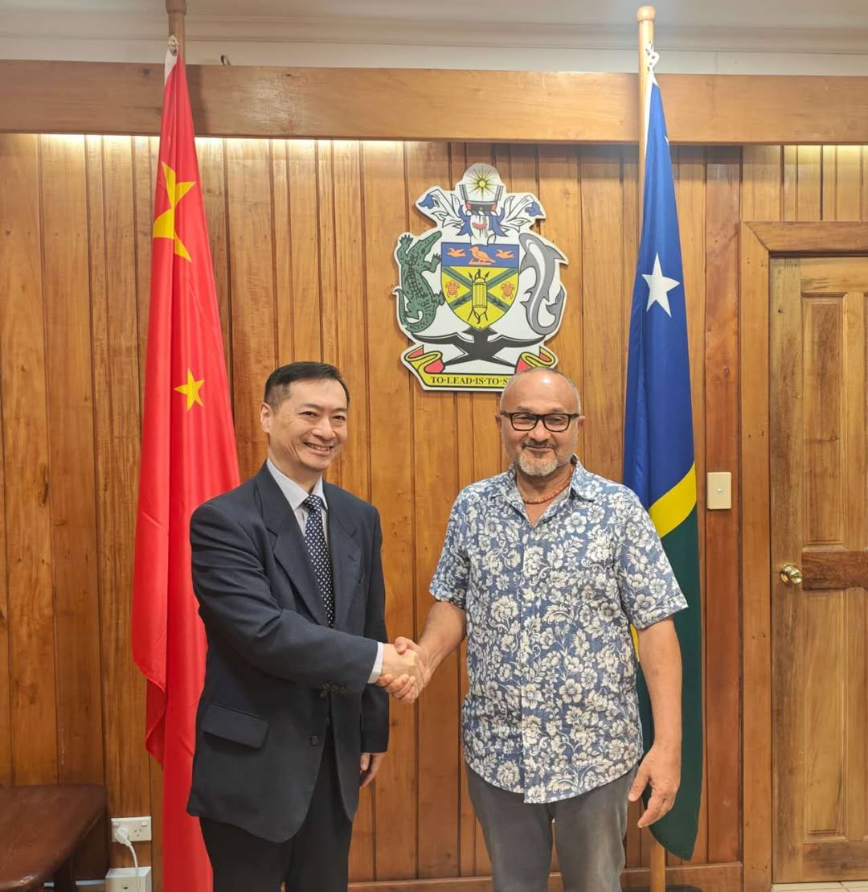

From China Skeptic to Sit-Down: Prime Minister Wale Hosts Beijing’s Envoy — Last Week in the Pacific
Chen Jing, Vice Chairman of the Standing Committee of the Shanghai Municipal People’s Congress and President, led a delegation from Shanghai to Vanuatu to discuss urban cooperation.
Chen Jing’s team met Stephen Felix, Speaker of the Parliament in Vanuatu, and city council officials from Port Vila and Luganville—the capital and second largest city in Vanuatu.
Shanghai and Port Vila established sister city ties in 1994.
As part of the visit, Chen Jing also granted three scholarships for students to receive training at the China Table Tennis College at the Shanghai University of Sport.
In an event at the National Archives of Vanuatu, Vice Chairman Chen donated the first batch of books to the library, including numerous copies of Xi Jinping’s “The Governance of China” series.
Summary of PRC Activity
China’s Ambassador to the Solomon Islands, Cai Weiming, met with the country’s new Prime Minister Matthew Wale the day after his election. Critical of China while serving as opposition leader, this meeting and Wale’s 2025 visit to China both highlight a softening stance on China. Tonga’s Parliamentary delegation led by Lord Speaker Vaea concluded its trip, meeting with Qian Bo, a member of the CCP’s Politburo, and companies across three Guangdong cities.
This Week’s Big Themes:
Cai Weiming meets Prime Minister Wale

Following two months of political maneuvering in the Solomon Islands, Matthew Wale was elected Prime Minister on Friday May 15th. China dispatched Ambassador Cai Weiming to meet with the new PM the following day where, according to the Chinese embassy readout, both sides stressed continuity in relations. Ambassador Cai expressed that China is ready to continue building “a community with a shared future” with the Solomon Islands. For his part, Wale thanked China for its support, highlighted China as one of the Solomon Island’s most important partners, promised to continue working closely, and affirmed his government’s support for China’s version of the one-China principle.
A single one-sided statement isn’t enough to deduce where his government stands on China, but is likely representative of the former opposition leader’s shifting politics. In the past, Wale has been openly critical of China, opposing the 2022 security agreement between his country and China. In the years since, Wale has begun to change his tune. In June 2025, Wale as leader of the Democratic Party led a delegation to China where he praised China’s development and also affirmed the one-China principle.
Supporting Events
- Solomon Islands: Cai Weiming meets with PM Wale
Tongan Delegation Concludes China Visit
Continuing last week’s reporting on the Tongan Parliamentary delegation’s visit to China, the group led by Lord Speaker Vaea met with Qian Bo, China’s Special Envoy for Pacific Island Countries Affairs at the Ministry of Foreign Affairs. Special Envoy Bo hosted a dinner for the delegation. The MPs sang traditional Tongan melodies for their Chinese hosts. The delegation also met with Li Hongzhong a member of the CCP’s Politburo and First Vice Chairman of the Standing Committee of the National People’s Congress. Leaving Beijing, the group travelled to China’s technology and innovation hub Shenzhen to meet with Hytera Communications, Liancheng Overseas Fishery Group, and the Southern University of Science and Technology (SUSTech). A delegation from SUSTech travelled to Tonga last January, signing people-to-people and research agreements. Moving to Dongguan—Ha’apai’s sister city—the MPs toured an agriculture research center which demonstrated their robot dogs. Finally, the group proceeded to the provincial capital, Guangzhou. Concluding the visit, Xiao Yafei, Vice Chairman of the Standing Committee of the Guangdong Provincial People’s Congress, met with the MPs and led discussions on sub-national development opportunities.
Supporting Events
- Tonga: Parliamentary Delegation meets with Qian Bo and Li Hongzhong
- Tonga: Parliamentary Delegation visits Shenzhen
- Tonga: Parliamentary Delegation visits Dongguan
- Tonga: Parliamentary Delegation visits Guangzhou
* The PRC Pacific Embassies Monitor provides systematic, open-source tracking of Beijing’s public diplomatic activities across the nine Pacific Island Countries hosting Chinese missions. The monitor captures official embassy social media and website posts, supplemented by local sources, to offer a weekly structured intelligence report that bridges critical information gaps on regional engagement.